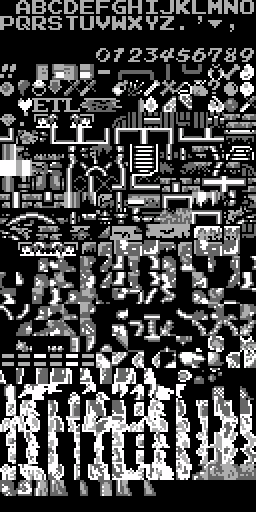
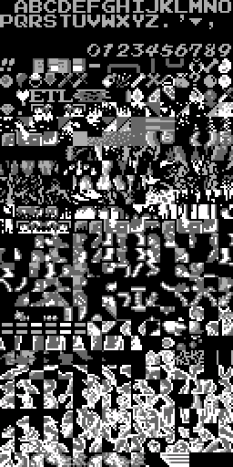
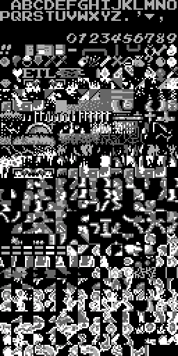

Current vertical slice
ROM bytes now flow into a real background image
ROMiNES, PRG, CHR
Contextobjset, area, submap
Tableslayout and tile pointers
Nametabletiles and attributes
PNGCHR plus palette


